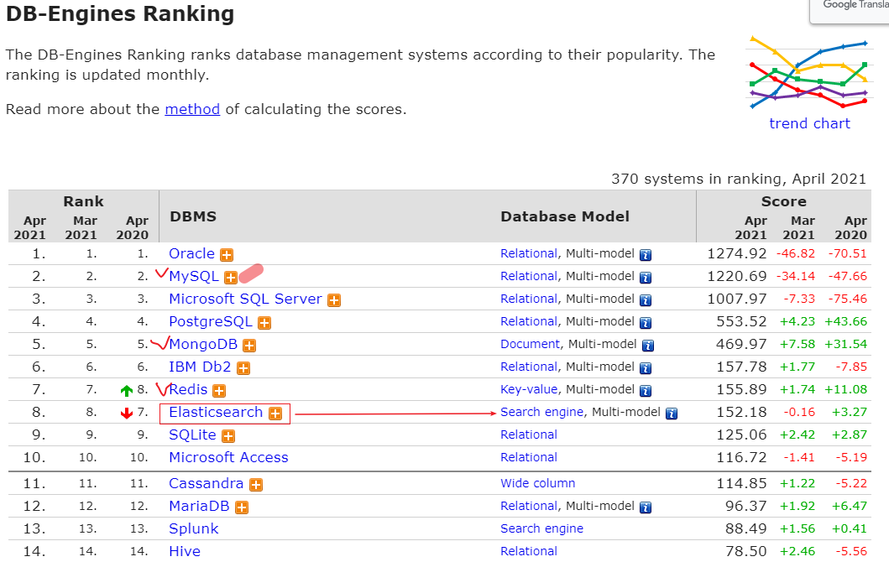
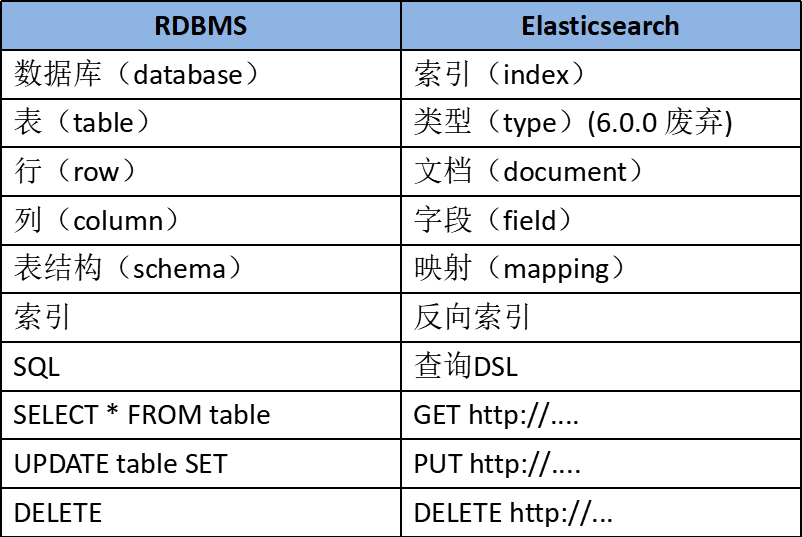

- 01 认知：ElasticSearch基础概念.md.html
- 02 认知：Elastic Stack生态和场景方案.md.html
- 03 安装：ElasticSearch和Kibana安装.md.html
- 04 入门：查询和聚合的基础使用.md.html
- 05 索引：索引管理详解.md.html
- 06 索引：索引模板(Index Template)详解.md.html
- 07 查询：DSL查询之复合查询详解.md.html
- 08 查询：DSL查询之全文搜索详解.md.html
- 09 查询：DSL查询之Term详解.md.html
- 10 聚合：聚合查询之Bucket聚合详解.md.html
- 11 聚合：聚合查询之Metric聚合详解.md.html
- 12 聚合：聚合查询之Pipline聚合详解.md.html
- 13 原理：从图解构筑对ES原理的初步认知.md.html
- 14 原理：ES原理知识点补充和整体结构.md.html
- 15 原理：ES原理之索引文档流程详解.md.html
- 16 原理：ES原理之读取文档流程详解.md.html
- 17 优化：ElasticSearch性能优化详解.md.html
- 18 大厂实践：腾讯万亿级 Elasticsearch 技术实践.md.html
- 19 资料：Awesome Elasticsearch.md.html
- 20 WrapperQuery.md.html
- 21 备份和迁移.md.html
01 认知：ElasticSearch基础概念
为什么需要学习ElasticSearch
根据DB Engine的排名 显示，ElasticSearch是最受欢迎的企业级搜索引擎。
下图红色勾选的是我们前面的系列详解的，除此之外你可以看到搜索库ElasticSearch在前十名内：

所以为什么要学习ElasticSearch呢？
1、在当前软件行业中，搜索是一个软件系统或平台的基本功能， 学习ElasticSearch就可以为相应的软件打造出良好的搜索体验。
2、其次，ElasticSearch具备非常强的大数据分析能力。虽然Hadoop也可以做大数据分析，但是ElasticSearch的分析能力非常高，具备Hadoop不具备的能力。比如有时候用Hadoop分析一个结果，可能等待的时间比较长。
3、ElasticSearch可以很方便的进行使用，可以将其安装在个人的笔记本电脑，也可以在生产环境中，将其进行水平扩展。
4、国内比较大的互联网公司都在使用，比如小米、滴滴、携程等公司。另外，在腾讯云、阿里云的云平台上，也都有相应的ElasticSearch云产品可以使用。
5、在当今大数据时代，掌握近实时的搜索和分析能力，才能掌握核心竞争力，洞见未来。
什么是ElasticSearch
ElasticSearch是一款非常强大的、基于Lucene的开源搜索及分析引擎；它是一个实时的分布式搜索分析引擎，它能让你以前所未有的速度和规模，去探索你的数据。
它被用作全文检索、结构化搜索、分析以及这三个功能的组合：
- Wikipedia 使用 Elasticsearch 提供带有高亮片段的全文搜索，还有 search-as-you-type 和 did-you-mean 的建议。
- 卫报 使用 Elasticsearch 将网络社交数据结合到访客日志中，为它的编辑们提供公众对于新文章的实时反馈。
- Stack Overflow 将地理位置查询融入全文检索中去，并且使用 more-like-this 接口去查找相关的问题和回答。
- GitHub 使用 Elasticsearch 对1300亿行代码进行查询。
- ...
除了搜索，结合Kibana、Logstash、Beats开源产品，Elastic Stack（简称ELK）还被广泛运用在大数据近实时分析领域，包括：日志分析、指标监控、信息安全等。它可以帮助你探索海量结构化、非结构化数据，按需创建可视化报表，对监控数据设置报警阈值，通过使用机器学习，自动识别异常状况。
ElasticSearch是基于Restful WebApi，使用Java语言开发的搜索引擎库类，并作为Apache许可条款下的开放源码发布，是当前流行的企业级搜索引擎。其客户端在Java、C#、PHP、Python等许多语言中都是可用的。
ElasticSearch的由来
ElasticSearch背后的小故事
许多年前，一个刚结婚的名叫 Shay Banon 的失业开发者，跟着他的妻子去了伦敦，他的妻子在那里学习厨师。 在寻找一个赚钱的工作的时候，为了给他的妻子做一个食谱搜索引擎，他开始使用 Lucene 的一个早期版本。
直接使用 Lucene 是很难的，因此 Shay 开始做一个抽象层，Java 开发者使用它可以很简单的给他们的程序添加搜索功能。 他发布了他的第一个开源项目 Compass。
后来 Shay 获得了一份工作，主要是高性能，分布式环境下的内存数据网格。这个对于高性能，实时，分布式搜索引擎的需求尤为突出， 他决定重写 Compass，把它变为一个独立的服务并取名 Elasticsearch。
第一个公开版本在2010年2月发布，从此以后，Elasticsearch 已经成为了 Github 上最活跃的项目之一，他拥有超过300名 contributors(目前736名 contributors )。 一家公司已经开始围绕 Elasticsearch 提供商业服务，并开发新的特性，但是，Elasticsearch 将永远开源并对所有人可用。
据说，Shay 的妻子还在等着她的食谱搜索引擎…
为什么不是直接使用Lucene
ElasticSearch是基于Lucene的，那么为什么不是直接使用Lucene呢？
Lucene 可以说是当下最先进、高性能、全功能的搜索引擎库。
但是 Lucene 仅仅只是一个库。为了充分发挥其功能，你需要使用 Java 并将 Lucene 直接集成到应用程序中。 更糟糕的是，您可能需要获得信息检索学位才能了解其工作原理。Lucene 非常 复杂。
Elasticsearch 也是使用 Java 编写的，它的内部使用 Lucene 做索引与搜索，但是它的目的是使全文检索变得简单，通过隐藏 Lucene 的复杂性，取而代之的提供一套简单一致的 RESTful API。
然而，Elasticsearch 不仅仅是 Lucene，并且也不仅仅只是一个全文搜索引擎。 它可以被下面这样准确的形容：
- 一个分布式的实时文档存储，每个字段 可以被索引与搜索
- 一个分布式实时分析搜索引擎
- 能胜任上百个服务节点的扩展，并支持 PB 级别的结构化或者非结构化数据
ElasticSearch的主要功能及应用场景
我们在哪些场景下可以使用ES呢？
- 主要功能：
1）海量数据的分布式存储以及集群管理，达到了服务与数据的高可用以及水平扩展；
2）近实时搜索，性能卓越。对结构化、全文、地理位置等类型数据的处理；
3）海量数据的近实时分析（聚合功能）
- 应用场景：
1）网站搜索、垂直搜索、代码搜索；
2）日志管理与分析、安全指标监控、应用性能监控、Web抓取舆情分析；
ElasticSearch的基础概念
我们还需对比结构化数据库，看看ES的基础概念，为我们后面学习作铺垫。
- Near Realtime（NRT） 近实时。数据提交索引后，立马就可以搜索到。
- Cluster 集群，一个集群由一个唯一的名字标识，默认为“elasticsearch”。集群名称非常重要，具有相同集群名的节点才会组成一个集群。集群名称可以在配置文件中指定。
- Node 节点：存储集群的数据，参与集群的索引和搜索功能。像集群有名字，节点也有自己的名称，默认在启动时会以一个随机的UUID的前七个字符作为节点的名字，你可以为其指定任意的名字。通过集群名在网络中发现同伴组成集群。一个节点也可是集群。
- Index 索引: 一个索引是一个文档的集合（等同于solr中的集合）。每个索引有唯一的名字，通过这个名字来操作它。一个集群中可以有任意多个索引。
- Type 类型：指在一个索引中，可以索引不同类型的文档，如用户数据、博客数据。从6.0.0 版本起已废弃，一个索引中只存放一类数据。
- Document 文档：被索引的一条数据，索引的基本信息单元，以JSON格式来表示。
- Shard 分片：在创建一个索引时可以指定分成多少个分片来存储。每个分片本身也是一个功能完善且独立的“索引”，可以被放置在集群的任意节点上。
- Replication 备份: 一个分片可以有多个备份（副本）
为了方便理解，作一个ES和数据库的对比

参考文章
- https://www.elastic.co/guide/cn/elasticsearch/guide/current/intro.html
- https://www.elastic.co/guide/cn/elasticsearch/guide/current/getting-started.html
- https://www.cnblogs.com/leeSmall/p/9189078.html